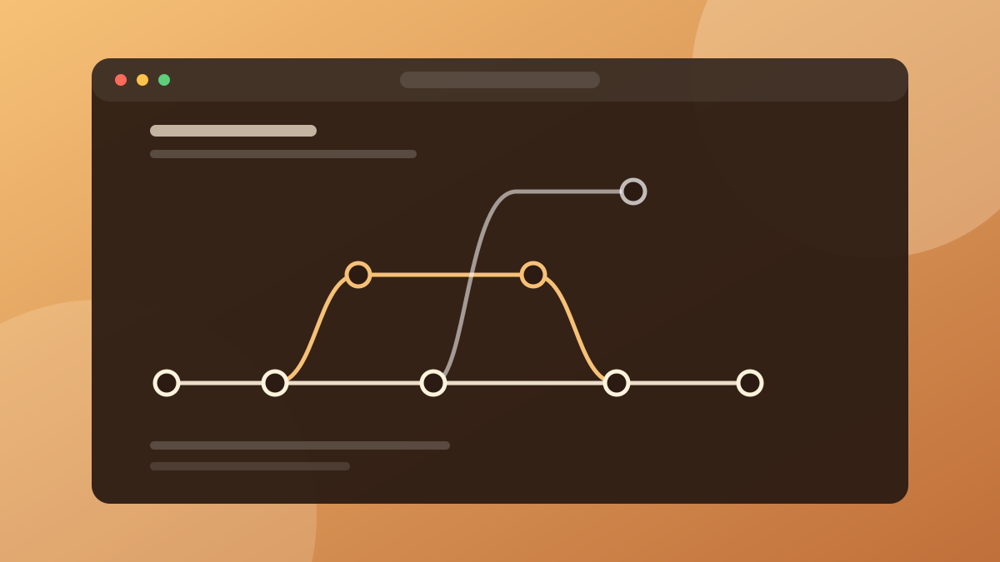
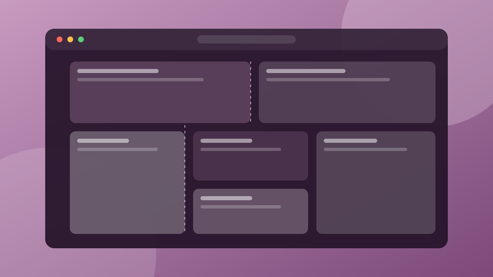

· 5 dk okuma
Git ile Başlangıç: Versiyon Kontrolü Neden Hayat Kurtarır?
Git'in temel fikrini, en sık kullanılan komutları ve dal mantığını örneklerle anlattım.
Yazılım ve web üzerine notlar. Her yazıda, ekran görüntüsü yerine geçen bir görsel ve açıklaması var.

· 5 dk okuma
Git'in temel fikrini, en sık kullanılan komutları ve dal mantığını örneklerle anlattım.

· 6 dk okuma
İki düzen sisteminin farkı, ortak kullanımı ve responsive tasarımda işe yarayan küçük bir kalıp.

· 5 dk okuma
Anlamsal HTML, klavye erişimi ve renk kontrastıyla erişilebilir siteler için pratik bir başlangıç listesi.
Bir konuyu başkasına anlatabiliyorsam gerçekten öğrenmişim demektir. Yazılar hem benim için not defteri hem de benzer şeyleri öğrenenler için küçük bir rehber.